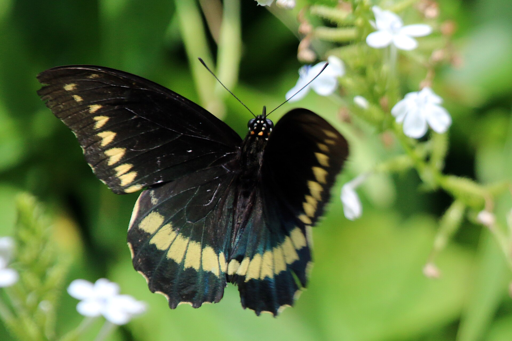
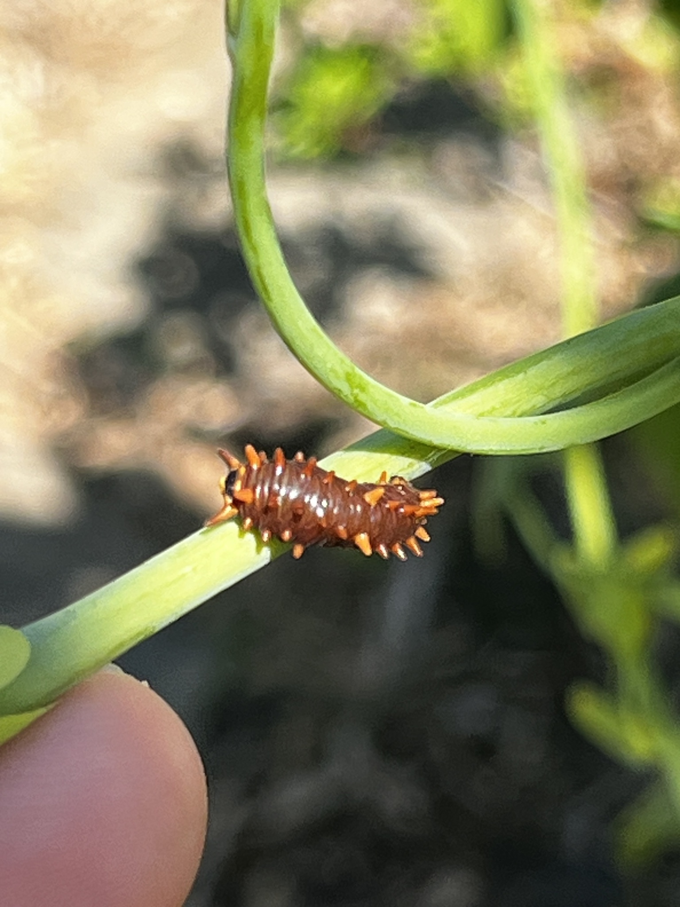

Battus polydamas
PossibleThe tailless black swallowtail in gardens that grow Dutchman’s pipe. Regular here when the vine is planted. Not a migrant.

Yards and gardens with Aristolochia.
Calico flower
Aristolochia elegansother pipevines
Aristolochia spp.Pipevine Swallowtail has tails and is only a stray in south Florida.